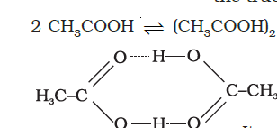
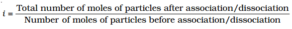
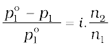

We know that ionic compounds when dissolved in water dissociate into cations and anions. For example, if we dissolve one mole of KCl (74.5 g) in water, we expect one mole each of K+ and Cl– ions to be released in the solution. If this happens, there would be two moles of particles in the solution. If we ignore interionic attractions, one mole of KCl in one kg of water would be expected to increase the boiling point by 2 × 0.52 K = 1.04 K. Now if we did not know about the degree of dissociation, we could be led to conclude that the mass of 2 mol particles is 74.5 g and the mass of one mole of KCl would be 37.25 g. This brings into light the rule that, when there is dissociation of solute into ions, the experimentally determined molar mass is always lower than the true value.

Molecules of ethanoic acid (acetic acid) dimerise in benzene due to hydrogen bonding. This normally happens in solvents of low dielectric constant. In this case the number of particles is reduced due to dimerisation. Association of molecules is depicted as follows:
It can be undoubtedly stated here that if all the molecules of ethanoic acid associate in benzene, then ∆Tb or ∆Tf for ethanoic acid will be half of the normal value. The molar mass calculated on the basis of this ∆Tb or ∆Tf will, therefore, be twice the expected value. Such a molar mass that is either lower or higher than the expected or normal value is called as abnormal molar mass.
In 1880 van’t Hoff introduced a factor i, known as the van’t Hoff factor, to account for the extent of dissociation or association. This factor i is defined as:

Here abnormal molar mass is the experimentally determined molar mass and calculated colligative properties are obtained by assuming that the non-volatile solute is neither associated nor dissociated. In case of association, value of i is less than unity while for dissociation it is greater than unity. For example, the value of i for aqueous KCl solution is close to 2, while the value for ethanoic acid in benzene is nearly 0.5.
Inclusion of van’t Hoff factor modifies the equations for colligative properties as follows:
Relative lowering of vapour pressure of solvent,

Elevation of Boiling point, ∆Tb = i Kb m
Depression of Freezing point, ∆Tf = i Kf m
Osmotic pressure of solution, Π = i n2RT/V
The table depicts values of the factor, i for several strong electrolytes. For KCl, NaCl and MgSO4, i approach 2 as the solution becomes very dilute. As expected, the value of i gets close to 3 for K2SO4.
| Salt | *Values of i | van't Hoff Factor i for complete dissociation of solute | ||
| 0.1 m | 0.01m | 0.001m | ||
| NaCl | 1.87 | 1.94 | 1.97 | 2.00 |
| KCl | 1.85 | 1.94 | 1.98 | 2.00 |
| MgSO4 | 1.21 | 1.53 | 1.82 | 3.00 |
| K2SO4 | 2.32 | 2.70 | 2.84 | 3.00 |
*represent i values for incomplete dissociation.